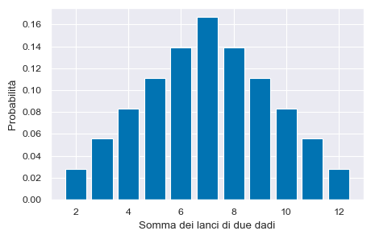

Calcolo combinatorio
Contents
16. Calcolo combinatorio#
16.1. Introduzione#
Il calcolo combinatorio si pone il problema di determinare il numero dei modi mediante i quali possono essere associati, secondo prefissate regole, gli elementi di uno stesso insieme o di più insiemi. Alcuni dei problemi del calcolo delle probabilità per essere risolti richiedono l’utilizzo dei metodi del calcolo combinatorio.
In questo capitolo verranno discussi alcuni concetti del calcolo combinatorio. In particolare, verranno introdotti il principio del prodotto, il principio della somma e il modello dell’urna. Verranno inoltre descritte le nozioni di permutazione semplice, disposizione semplice e di combinazione semplice.
16.2. Principio del prodotto#
I metodi di base del calcolo combinatorio applicano due principi: la regola del prodotto e la regola della somma. Consideriamo il principio del prodotto.
In generale, una scelta può essere fatta in più passi, poniamo \(k\). Supponiamo che per ogni \(i = 1, \dots, k\) la scelta da compiere all’\(i\)-mo passo possa essere fatta in \(n_i\) modi. Il principio del prodotto dice che allora il numero totale di possibili scelte è il prodotto
Esempio 1. In Minnesota le targhe delle automobili sono costituite da tre lettere (da A a Z) seguite da tre numeri (da 0 a 9). Qual è la proporzione di targhe che iniziano con GZN?
La soluzione è data dal numero di targhe che iniziano con GZN diviso per il numero totale di targhe possibili.
Il numero totale di targe è \(26 \cdot 26 \cdot 26 \cdot 10 \cdot 10 \cdot 10 = 17,576,000\). Per calcolare il numero di targhe che iniziano con GZN, consideriamo le targhe che hanno la forma GZN _ _ _. Per i tre simboli mancanti ci sono \(10 \cdot 10 \cdot 10\) possibilità. Dunque la proporzione cercata è
10**3 / (26**3 * 10**3)
5.689576695493855e-05
16.3. Principio della somma#
Se un evento può accadere in \(\vert S_1\vert\) modi, un secondo evento può accadere in \(\vert S_2\vert\) modi, \(\dots\), un ultimo evento può accadere in \(\vert S_k\vert\) modi, vi sono \(\vert S_1\vert + \vert S_2\vert + \dots + \vert S_{k-1}\vert + \vert S_k\vert\) modi in cui uno dei \(k\) eventi può accadere. In altri termini, se i sottoinsiemi \(S_1, \dots, S_k\), costituiscono una partizione di \(S\), allora
Esempio 2. L’urna \(A\) contiene \(5\) palline numerate da \(1\) a \(5\), l’urna \(B\) contiene \(6\) palline numerate da \(6\) a \(11\), l’urna \(C\) contiene \(3\) palline numerate da \(12\) a \(14\) e l’urna \(D\) contiene \(2\) palline numerate \(15\) e \(16\). Quanti insiemi composti da due palline, ciascuna estratta da un’urna differente, si possono formare?
Per la regola del prodotto, si possono formare: \(30\) insiemi di tipo \(AB\) (una pallina estratta dall’urna \(A\) e una estratta dall’urna \(B\)), \(15\) di tipo \(AC\), \(10\) di tipo \(AD\), \(18\) di tipo \(BC\), \(12\) di tipo \(BD\) e \(6\) di tipo \(CD\). Per la regola della somma, il numero di insiemi distinti che si possono formare con due palline provenienti dalle quattro urne è \(30 + 15 + 10 + 18 + 12 + 6 = 91\).
16.4. Il modello dell’urna#
I problemi del calcolo combinatorio sono spesso assimilabili ad estrazioni di palline da urne che diventano così schemi o modelli delle corrispondenti situazioni considerate. Si definisce modello dell’urna la procedura per cui, da un’urna contenente \(n\) palline, si estraggono a caso \(k\) palline. Le palline possono essere tutte diverse, oppure alcune palline possono essere tra loro indistinguibili. Fra le possibili modalità di estrazione hanno speciale interesse
l’estrazione Bernoulliana di \(k\) palline ottenuta estraendo, una dopo l’altra, \(k\) palline e rimettendo ogni volta nell’urna la pallina estratta;
l’estrazione senza ripetizione di \(k\) palline ottenuta estraendo, una dopo l’altra, \(k\) palline senza rimetterle nell’urna;
l’estrazione in blocco di \(k\) palline ottenuta estraendo \(k\) palline simultaneamente.
Per esempio, nel caso di campioni di ampiezza 2 estratti da un’urna con tre elementi \(\{1, 2, 3\}\), abbiamo i seguenti quattro casi:
campionamento con reimmissione tenendo conto dell’ordine di estrazione: \(\{1, 1\}, \{2, 1\}, \{3, 1\}, \{1, 2\}, \{2, 2\}, \{3, 2\}, \{1, 3\}, \{2, 3\}, \{3, 3\}\);
campionamento con reimmissione senza tenere conto dell’ordine di estrazione: \(\{1, 1\}, \{1, 2\}, \{1, 3\}, \{2, 2\}, \{2, 3\}, \{3, 3\}\);
campionamento senza reimmissione tenendo conto dell’ordine di estrazione: \(\{1, 2\}, \{2, 1\}, \{1, 3\}, \{3, 1\}, \{2, 3\}, \{3, 2\}\);
campionamento senza reimmissione e senza tenere conto dell’ordine di estrazione: \(\{1 , 2\}, \{1, 3\}, \{2, 3\}\).
16.5. Permutazioni semplici#
Una permutazione semplice di elementi diversi tra loro è il risultato di uno scambio dell’ordine degli elementi di un insieme. Le permutazioni semplici si indicano con il simbolo \(P_{n}\). Il modello dell’urna è quello di \(n\) estrazioni senza rimessa da un’urna che contiene \(n\) palline diverse. Il numero delle permutazioni semplici di \(n\) elementi distinti è uguale a
dove il simbolo \(n!\) si legge \(n\) fattoriale ed è uguale al prodotto di \(n\) numeri interi decrescenti a partire da \(n\). Per definizione \(0! = 1\).
Esempio 3. Consideriamo l’insieme: \(A = \{a, b, c\}\). Calcoliamo il numero di permutazioni semplici.
Le permutazioni semplici di \(A\) sono: \(\{a, b, c\}\), \(\{a, c, b\}\), \(\{b, c, a\}\), \(\{b, a, c\}\), \(\{c, a, b\}\), \(\{c, b, a\}\), ovvero 6. Applichiamo l’eq. eq_permsem:
Lo strumento principale che usiamo in Python per trovare le permutazioni di un insieme è una libreria specificamente progettata per iterare sugli oggetti in modi diversi, ovvero itertools. Importiamo le librerie necessarie.
import numpy as np
import pandas as pd
import itertools as it
import math
import matplotlib.pyplot as plt
import seaborn as sns
from scipy.constants import golden
%matplotlib inline
sns.set_theme(
context="paper",
style="darkgrid",
palette="colorblind",
rc={'figure.figsize': (5.0, 5.0/golden)},
)
SEED = 123456
rng = np.random.default_rng(SEED)
Con itertools.permutations() generiamo le permutazioni. Per visualizzare il risultato dobbiamo trasformarlo in una tupla:
permutations = it.permutations("ABC")
permutations = tuple(permutations)
permutations
(('A', 'B', 'C'),
('A', 'C', 'B'),
('B', 'A', 'C'),
('B', 'C', 'A'),
('C', 'A', 'B'),
('C', 'B', 'A'))
Possiamo ora contare quanti elementi ci sono nella tupla usando la funzione len():
len(permutations)
6
Oppure, applicando direttamente la formula (16.1) possiamo usare la funzione factorial() contenuta nella libreria math di Numpy:
np.math.factorial(3)
6
Esempio 4. Gli anagrammi sono le permutazioni che si ottengono da una parola variando l’ordine delle lettere. Le permutazioni semplici si applicano al caso di parole costituite da lettere tutte diverse tra loro. Ad esempio, con la parola NUMERO si ottengono \(P_6 = 6! = 6\cdot5\cdot4\cdot3\cdot2\cdot1 = 720\) anagrammi.
permutations = it.permutations("NUMERO")
permutations = tuple(permutations)
permutations[0:5]
(('N', 'U', 'M', 'E', 'R', 'O'),
('N', 'U', 'M', 'E', 'O', 'R'),
('N', 'U', 'M', 'R', 'E', 'O'),
('N', 'U', 'M', 'R', 'O', 'E'),
('N', 'U', 'M', 'O', 'E', 'R'))
len(permutations)
720
np.math.factorial(6)
720
Esempio 5. Un altro esempio riguarda i giochi di carte. Ci sono 52! \(\approx 8 \times 10^{67}\) modi di ordinare un mazzo di carte da poker; questo numero è ``quasi’’ grande come il numero di atomi dell’universo che si stima essere uguale a circa \(10^{80}\).
np.math.factorial(52)
80658175170943878571660636856403766975289505440883277824000000000000
16.6. Disposizioni semplici#
Supponiamo di voler selezionare una sequenza di \(k\) oggetti da un insieme di \(n\) e che l’ordine degli oggetti abbia importanza. Si chiamano disposizioni semplici di \(n\) elementi distinti presi a \(k\) a \(k\) (o disposizioni della classe \(k\)) tutti i raggruppamenti che si possono formare con gli oggetti dati in modo che qualsiasi raggruppamento ne contenga \(k\) tutti distinti tra loro (ovvero, senza ripetizione) e che due raggruppamenti differiscano tra loro per qualche oggetto oppure per l’ordine secondo il quale gli oggetti si susseguono. Le disposizioni semplici della classe \(k\) si indicano con \(D_{n,k}\).
Il modello dell’urna è quello dell’estrazione senza rimessa di \(k < n\) palline da un’urna che contiene \(n\) palline diverse.
Il numero delle disposizioni semplici di \(n\) elementi distinti della classe \(k\) è uguale a
Esempio 6. Consideriamo l’insieme: \(A = \{a, b, c\}\). Qual è il numero di disposizioni semplici di classe 2?
Le disposizioni semplici di classe 2 sono:
\(\{a, b\}\), \(\{b, a\}\), \(\{a, c\}\), \(\{c, a\}\), \(\{b, c\}\), \(\{c, b\}\), ovvero 6.
Ovvero
Possiamo trovare il risultato con la seguente istruzione:
tuple(it.permutations("ABC", 2))
(('A', 'B'), ('A', 'C'), ('B', 'A'), ('B', 'C'), ('C', 'A'), ('C', 'B'))
res = tuple(it.permutations("ABC", 2))
len(res)
6
Oppure possiamo implementare l’eq. (16.2):
def simple_disp(n, k):
return np.math.factorial(n) / np.math.factorial(n - k)
simple_disp(3, 2)
6.0
16.7. Combinazioni semplici#
Le combinazioni semplici di \(n\) elementi a \(k\) a \(k\) (\(k \leq n\)) sono tutti i sottoinsiemi di \(k\) elementi di un dato insieme di \(n\) elementi, tutti distinti tra loro. Le combinazioni semplici della classe \(k\) si indicano con il simbolo \(C_{n,k}\). Il modello dell’urna è quello dell’estrazione senza reimmissione di \(k\) palline da un’urna che contiene \(n\) palline distinte tra loro: non c’è la ripetizione di elementi né un ordine di estrazione.
Le combinazioni semplici differiscono dalle disposizioni semplici per il fatto che le disposizioni semplici tengono conto dell’ordine di estrazione mentre nelle combinazioni semplici si considerano distinti solo i raggruppamenti che differiscono almeno per un elemento. Gli elementi di ciascuna combinazione di \(k\) oggetti possono essere ordinati tra loro in \(k!\) modi diversi, per cui il numero delle combinazioni semplici è dato dal numero di disposizioni semplici \(D_{n,k}\) diviso per il numero di permutazioni semplici \(P_k\) dei \(k\) elementi, come indicato nell’eq. (16.4). Il numero delle combinazioni semplici di \(n\) elementi distinti della classe \(k\) è uguale a
Il numero delle combinazioni semplici \(C_{n,k}\) è spesso indicato con il simbolo \(\binom{n}{k}\) che si legge ``\(n\) su \(k\)’’ e viene detto coefficiente binomiale.
Esempio 7. Per l’insieme \(A = \{a, b, c\}\) si trovino le combinazioni semplici di classe 2.
Le combinazioni semplici dell’insieme \(A\) sono \(\{a, b\}\), \(\{a, c\}\), \(\{b, c\}\), ovvero 3. Applichiamo l’eq. (16.4):
Usiamo itertools:
c_nk = tuple(it.combinations("ABC", 2))
c_nk
(('A', 'B'), ('A', 'C'), ('B', 'C'))
len(c_nk)
3
La soluzione si trova anche usando la funzione comb() della libreria math.
math.comb(3, 2)
3
Oppure usando la funzione comb() della libreria scipy.special.
import scipy.special as sp
sp.comb(5, 2)
10.0
Esempio 8. Quanti gruppi di 2 si possono formare con 5 individui?
c_nk = tuple(it.combinations(range(5), 2))
c_nk
((0, 1),
(0, 2),
(0, 3),
(0, 4),
(1, 2),
(1, 3),
(1, 4),
(2, 3),
(2, 4),
(3, 4))
len(c_nk)
10
ovvero
math.comb(5, 2)
10
16.8. Anticipazione#
Aggiungo due esempi aggiuntivi. Con questi semplici esempi useremo il calcolo combinatorio per anticipare il concetto di “probabilità” che verrà sviluppato nel capitolo successivo.
Esempio 9. Consideriamo l’esperimento casuale corrispondente al lancio di un dado bilanciato a sei facce. L’insieme di tutti i risultati possibili si dice “spazio campione” dell’esperimento casuale.
sample = [dice1 for dice1 in range(1, 7)]
print(sample)
[1, 2, 3, 4, 5, 6]
Definisco l’evento ‘risultato minore di 4’:
event = [roll for roll in sample if roll < 4]
print(event)
[1, 2, 3]
Calcolo la probabilità di ottenere un numero minore di 4 quando lancio un dado bilanciato.
print(len(event), "/", len(sample))
3 / 6
Il precedente esercizio illustra il tipo di procedura che si usa negli esercizi che chiedono di trovare la probabilità di un evento utilizzando il calcolo combinatorio. Quello che abbiamo fatto (in un caso in cui non era ovviamente necessario usare Python per trovare la soluzione) è stato di contare il numero di punti dello spazio campione (len(sample)) e il numero di punti dello spazio campione che soddisfano la condizione enunciata dal problema (len(event)). Il rapporto ci dà quello che chiamiamo probabilità.
Esempio 10. Consideriamo il lancio di due dadi bilanciati a quattro facce numerate 1, 2, 3, 4. Creo lo spazio campione di questo esperimento casuale.
die_rolls = list(it.product(range(1, 5), repeat=2))
die_rolls
[(1, 1),
(1, 2),
(1, 3),
(1, 4),
(2, 1),
(2, 2),
(2, 3),
(2, 4),
(3, 1),
(3, 2),
(3, 3),
(3, 4),
(4, 1),
(4, 2),
(4, 3),
(4, 4)]
In questo esperimento casuale sono interessato alla somma dei punti ottenuti dai due dadi. La somma dei punti può assumere sette valori possibili:
results = np.arange(2, 9)
results
array([2, 3, 4, 5, 6, 7, 8])
Mi pongo la seguente domanda: in quanti modi diversi posso ottenere ciascuno dei possibili sette valori elencati sopra? Il valore 2 si trova solo in un punto dello spazio campione, (1, 1); il valore 3 si trova solo in due punti dello spazio campione: (1, 2), (2, 1); eccetera. Nel caso di uno spazio campione piccolo (16 elementi nel caso presente) possiamo fare questi calcoli a mano. Ma quando lo spazio campione è più grande, questo non è possibile. Usiamo dunque Python per trovare la soluzione.
sum(sum(rol) == results for rol in die_rolls)
array([1, 2, 3, 4, 3, 2, 1])
Esaminiamo la seguente list comprehension:
[sum(rol) == results for rol in die_rolls]
[array([ True, False, False, False, False, False, False]),
array([False, True, False, False, False, False, False]),
array([False, False, True, False, False, False, False]),
array([False, False, False, True, False, False, False]),
array([False, True, False, False, False, False, False]),
array([False, False, True, False, False, False, False]),
array([False, False, False, True, False, False, False]),
array([False, False, False, False, True, False, False]),
array([False, False, True, False, False, False, False]),
array([False, False, False, True, False, False, False]),
array([False, False, False, False, True, False, False]),
array([False, False, False, False, False, True, False]),
array([False, False, False, True, False, False, False]),
array([False, False, False, False, True, False, False]),
array([False, False, False, False, False, True, False]),
array([False, False, False, False, False, False, True])]
L’istruzione for rol in die_rolls significa “considera ciascuno degli elementi (rol) della lista die_rolls”. Ciascuno dei 16 elementi di die_rolls è una lista di due elementi (i punti dei due dadi). La lista die_rolls elenca dunque tutti i risultati possibili dell’esperimento casuale, ovvero tutti i 16 punti dello spazio campione.
L’espressione sum(rol) applica il metodo sum() a ciascun elemento (coppia di valori) della lista die_rolls.
La condizione logica sum(rol) == results si chiede se ciascuno dei possibili risultati prodotti da sum(rol) sia uguale a ciascuno dei valori elencati in results (i possibi valori della somma dei lanci di due dadi). Questa condizione logica viene testata per tutti i possibili punti dello spazio campione (16) e per tutti i possibili risultati (7), come indicato dai valori booleani stampati sopra.
Ci chiediamo, in ciascuno dei punti campione dello spazio campione se la condizione logica (somma uguale a uno dei valori possibili elencati in results) viene soddisfatta. La somma dei valori True ci dice in quanti punti dello spazio campione la somma assume ciascuno dei valori che abbiamo elencato. Se dividiamo ciascuno dei valori [1, 2, 3, 4, 3, 2, 1] per 16 (il numero totale di punti dello spazio campione), otteniamo la probabilità che la variabile “somma” ottenga il valore 2, il valore 3, ecc. Vedremo nel capitolo Introduzione al calcolo delle probabilità che l’insieme di queste probabilità cosituisce quella che viene chiamata una distribuzione di massa di probabilità di una variabile casuale discreta (nel nostro caso, la somma dei punti prodotti dal lancio dei due dadi).
È facile applicare questo metodo a casi più complessi. Per esempio, nel caso di due dadi bilanciati a sei facce otteniamo:
die_rolls = list(it.product(range(1, 7), repeat=2))
results = np.arange(2, 13)
sum(sum(rol) == results for rol in die_rolls)
array([1, 2, 3, 4, 5, 6, 5, 4, 3, 2, 1])
La distribuzione di probabilità si trova dividendo per 36:
prob = sum(sum(rol) == results for rol in die_rolls) / len(die_rolls)
prob
array([0.02777778, 0.05555556, 0.08333333, 0.11111111, 0.13888889,
0.16666667, 0.13888889, 0.11111111, 0.08333333, 0.05555556,
0.02777778])
fig, ax = plt.subplots()
_ = plt.bar(results, prob)
plt.xlabel("Somma dei lanci di due dadi")
plt.ylabel("Probabilità")
plt.show()

16.9. Watermark#
%load_ext watermark
%watermark -n -u -v -iv -w
Last updated: Sun Feb 12 2023
Python implementation: CPython
Python version : 3.10.9
IPython version : 8.7.0
pandas : 1.5.3
seaborn : 0.12.2
numpy : 1.24.1
scipy : 1.10.0
matplotlib: 3.6.3
Watermark: 2.3.1